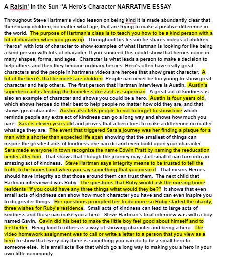
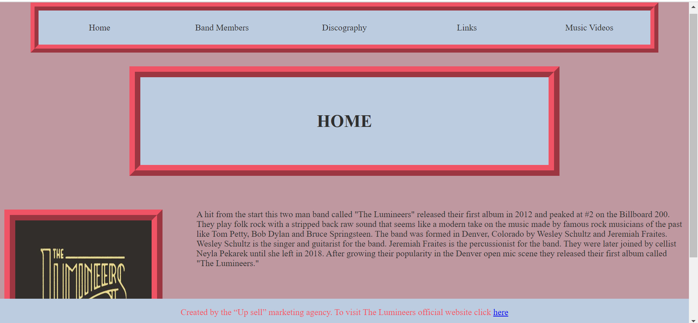

Academics Work
Essay
Animoto
Shop Work
This assignment was in a way a recap of everything that we had learned throughout the year. Within the assignment I had to use my knowledge of arrays loops functions if statements and storing user input. In this assignment I had to create a personal organiser that would repeat the event and date back to you after the user imputed the date of the event and the name of the event. This was accomplished by storing user input in an array and calling it back with a loop. We also had to run many validations that used if statements to compare data.
This year was the first time I ever learned python So everything that I used was something that I learned this year. His year we started with learning print statements. I use this when displaying the name and date of the events. After that we learned how to do loops and storing user input. I used this when validating the dates. After that we learned how to use the two different types of loops and in what scenarios we should use them. I used for loops when recalling information from arrays and I used the when loops when validating dates. After that we learned how to create and use functions. I used these all the time in the code and the majority of my code is functions. Finally I learned how to make arrays and this was the center of this project. I use the arrays to store all of the user input and to recall that input to print.
Related Work
The unit that we were studying when I completed this assignment was unit six in the netacad cyber security essentials course. Unit six was about accessibility and making sure that people have access to what they need as much as possible. The specific lab that I worked on was the 6.2.3.8 packet tracer. The lab wanted us to observe a network Failover with Redundant Routers and then observe a Network Failover with Redundant Switches.
The background for this lab was “In this activity, you will observe the successful failover of the Metropolis network utilizing multiple routers to provide default gateway redundancy. Afterwards across the world, you will observe the successful network failover of the Gotham network utilizing multiple switches to provide redundant network pathways. The IP addressing, network configuration, and service configurations are already complete. You will use the client devices in the differing geographic regions to test the pathways before and after successful network failover.” First I had to trace the pathway to an external web server and then I caused the network failure. Ater that I traced the pathway to an external web server again. Then I repeated the same steps in order to see the new router switch recovery. As a result the cable pathway switched from going s1 to s3 to going s1 to s2 to s3.
The lab taught about how companies protect their information with a visual representation. By changing the cable pathway they save time and improve accessibility. The cable change makes it so that instead of nothing going out it information takes a different path and still is successfully moved.
DDM
For my freshmen year DDM I had to build a website that was meant to advertise a band for the company “Up Sell.” The band that I had to advertise was The Lumeneers. The requirements stated that there had to be a section that had a home page with the band's logo and a short description of their early years, a section with the band members the instruments they play and a picture of them, a section for their discography that listed all their albums and song with the album covers present, a page to hold links to all the websites I used and, a page with the bands music videos. I started by making the header with all of the links and the footer on each page. To make the header I added the needed amount of "a" tags and then did the css for them. The css was just color adjustment and float left so they would be next to each other. For the footer I made a paragraph with a link in it. The css had the position fixed and the needed color adjustments. I then added the h1 tags for each page and did all of the css for all three elements that I had added. For the home page I started by first adding the picture. Then I added the paragraph and formatted both. It took me a while to get the formatting for the home page because I hadn’t fully figured out how to get elements to line up next to each other. I use the float left feature on the image to make the paragraph stay to the left of it. Then I added the contents for the band members page which was a lot easier. I created a table and put the information into it. The css was also simple for this page because I only had to add a border and background to the table. I also used this css for the next page I made. The next page that I made was the music videos page. I copied and pasted the I frames from youtube but took out the height and width css and added it back in on the external css page. I then added all of the iframes into a table. I then added all of the information for the links page but did the css at a later time. Then I did the discography page. First I added all of the images then a h2 tag to say the title of the album then I added the order list with the names of all the songs. First I added the css for the images then I centered the rest of the elements using an automatic margin. After that I added the border and background for the rest of the elements. Finally I did the css for the links page by adding background borders and padding for the paragraph tag.
